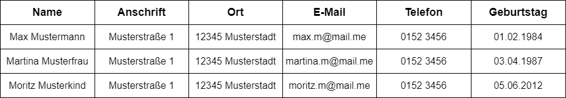
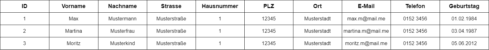
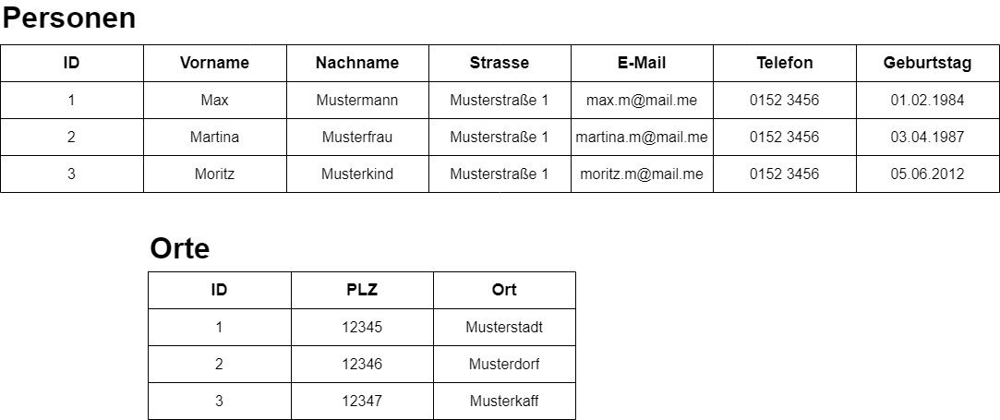

Die Normalisierung von relationalen Datenbanken ist ein Vorgehen, bei dem die Ausgangstabelle in mehrere kleine Tabellen zerlegt wird. Dann werden sie über Fremdschlüssel in Beziehung gesetzt.
Ziel einer solchen Normalisierung ist das Erschaffen einer redundanzfreien Datenspeicherung, die Vermeidung von Anomalien, sowie die Erstellung eines klar strukturierten Datenbankmodells.
Wir nehmen eine Adressliste als Beispiel:
Die 1. Normalform ist dann gegeben, wenn alle Attribute in einer Tabelle Atomar vorliegen.
Atomar bedeutet, dass sich jedes einzelne Attribut nicht in weitere Attribute aufteilen lässt. Dadurch kann eine Anwendung jedes Attribut einzeln behandeln.
Die 2. Normalform ist dann gegeben, wenn:
Bei der Anwendung der 2. Normalform wird die Ausgangs-Tabelle also in mehrere Tabellen verlagert.
Die 3. Normalform ist gegeben, wenn
Nicht immer ist die 3. Normalform nötig, und nicht jede Doppelung muss unnötig sein. Um mal bei diesem Beispiel zu bleiben: Es ist durchaus ok wenn ein Straßenname mehrfach vorkommt. Vor allem wenn man nur einige dutzende/hunderte Personeneinträge hat. Und vor allem wenn andere Daten, z.B. Bestellungen, die Mehrheit der Datensätz ausmacht.
Bei einer Datenbank aber, wo es vor allem um Adressen geht, da wäre das tatsächlich sinnvoll.